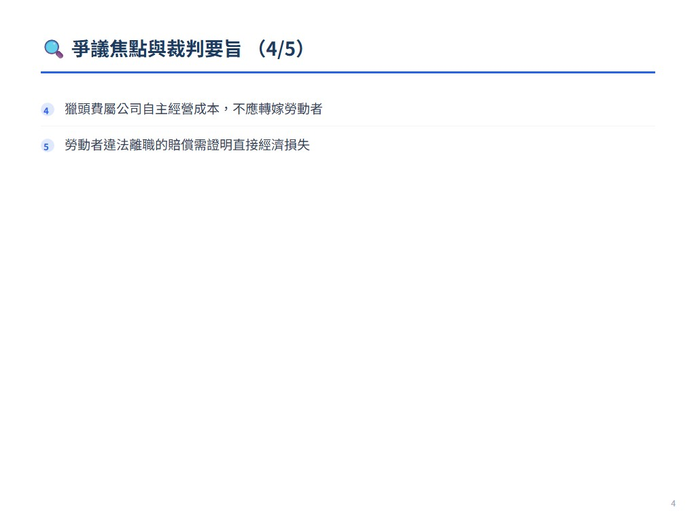
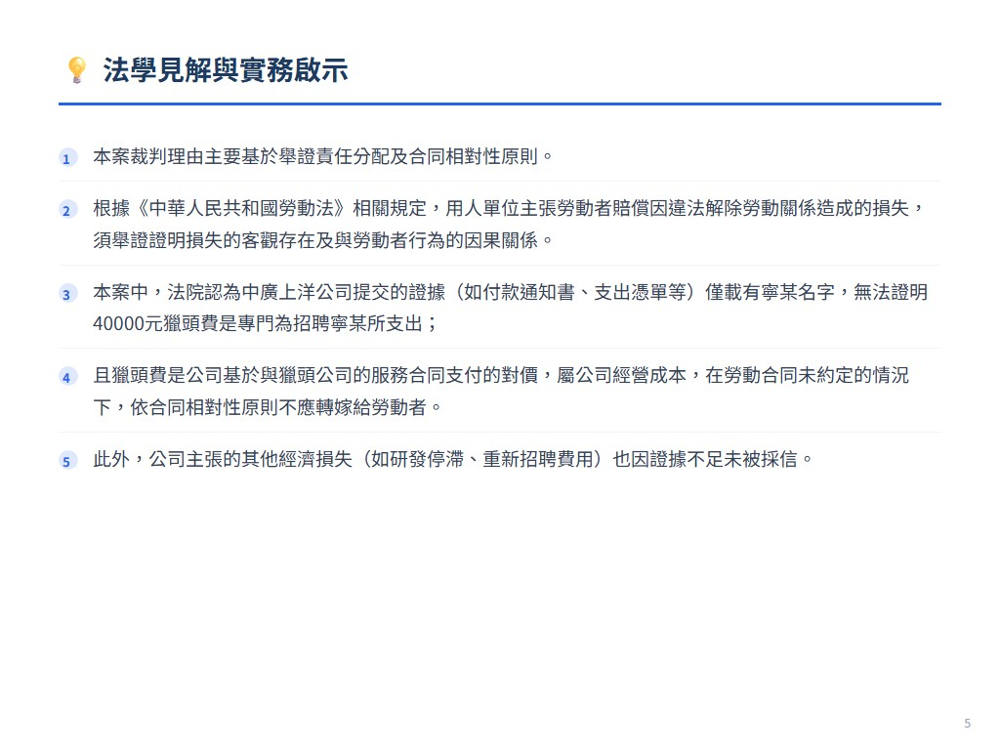
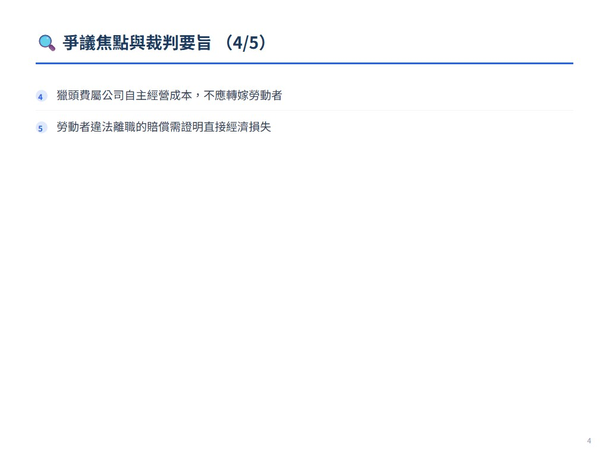
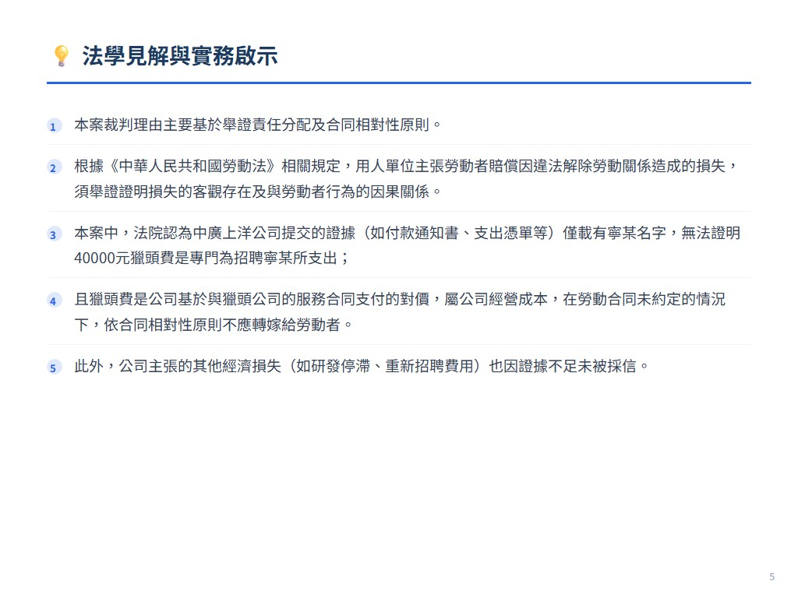

摘要
本案為北京中廣上洋科技股份有限公司與員工寧某的勞動爭議。公司主張寧某未提前30日通知離職且未辦理交接，導致公司需支付招聘寧某的獵頭費及產生其他經濟損失，要求寧某賠償。法院認為公司未能證明獵頭費是招聘寧某的必要支出，也未能證明損失與寧某離職行為有因果關係，且雙方勞動合同未約定獵頭費承擔，故駁回公司訴訟請求。
爭議焦點與裁判要旨
- 公司未能證明獵頭費是招聘寧某的必要支出
- 公司未能舉證損失與寧某離職行為有因果關係
- 勞動合同未約定獵頭費由勞動者承擔
- 獵頭費屬公司自主經營成本，不應轉嫁勞動者
- 勞動者違法離職的賠償需證明直接經濟損失
法學見解
本案裁判理由主要基於舉證責任分配及合同相對性原則。根據《中華人民共和國勞動法》相關規定，用人單位主張勞動者賠償因違法解除勞動關係造成的損失，須舉證證明損失的客觀存在及與勞動者行為的因果關係。本案中，法院認為中廣上洋公司提交的證據（如付款通知書、支出憑單等）僅載有寧某名字，無法證明40000元獵頭費是專門為招聘寧某所支出；且獵頭費是公司基於與獵頭公司的服務合同支付的對價，屬公司經營成本，在勞動合同未約定的情況下，依合同相對性原則不應轉嫁給勞動者。此外，公司主張的其他經濟損失（如研發停滯、重新招聘費用）也因證據不足未被採信。本案對保險實務的啟示在於：在處理類似爭議時，用人單位需注意舉證責任的履行，特別是損失的具體性與直接性；若欲將獵頭費等招聘成本轉由勞動者承擔，應在勞動合同中明確約定，但需注意《勞動合同法》對違約金約定的限制（僅限服務期違約及競業限制違約）。法官後語指出，獵頭費爭議在立法尚屬空白，司法實踐中應綜合考量獵頭費性質、合同約定及個案事實，避免將用人單位經營風險不當轉嫁勞動者。
 




展開案例評析
用人单位主张劳动者支付“猎头费”的处
來源：《中國法院2020年度案例》保險糾紛 原始文件：2020年度案例：劳动纠纷（含社会保险纠纷）.pdf 案號：北京市第一中级人民法院（2018）京01民终8065号民事判决书 案由：劳动争议纠纷 當事人：北京中广上洋科技股份有限公司诉宁某劳动争议案
53 用人单位主张劳动者支付“猎头费”的处 理方法 ——北京中广上洋科技股份有限公司诉宁某劳动争议案
【案件基本信息】
1.裁判书字号 北京市第一中级人民法院（2018）京01民终8065号民事判决书 2.案由：劳动争议纠纷 3.当事人 原告（上诉人）：北京中广上洋科技股份有限公司（以下简称中广 上洋公司） 被告（被上诉人）：宁某
【基本案情】
宁某于2016年6月2日入职中广上洋公司，双方订立了固定期限劳动 合同。2017年7月10日，宁某因个人原因以电子邮件形式向中广上洋公 司提交了离职申请，此后未再出勤。 中广上洋公司主张，其公司收到宁某的离职申请后，于2017年7月 11日起多次通过电子邮件的方式告知宁某应办理工作交接，但宁某提出
离职后便离开工作岗位未再出勤，未提前30日向其公司提出离职申请， 未办理离职工作交接。此外，宁某等12人还串通同时离职并入职竞争对 手的公司，对销售工作造成不良影响，导致其公司重新招录、培训、试 用员工，产生了费用，给其公司造成经济损失。同时，宁某等12人的离 职打断了其公司正常的研发、经营工作，导致产品的研发停滞，无法按 期交付，给其公司造成巨大经济损失。宁某应当对上述损失承担赔偿责 任。为证明其主张，中广上洋公司提交电子邮件打印件、付款通知书、 支出凭单、增值税发票予以证明。电子邮件发件方为中广上洋公司。其 中2017年7月11日发送的电子邮件中要求宁某自提交辞职申请之日起30 日内，应当继续在公司正常履职并协助公司完成工作交接。2017年7月 13日发送的电子邮件中载明宁某提出离职申请后未进行任何交接善后， 未完成工作交接并对公司产品造成影响的，公司将保留追究法律责任的 权利。付款通知书显示出具方为埃摩森人力资源（北京）有限公司（以 下简称埃摩森公司），付款详情为咨询费，并载有“宁某”字样，金额共 计40000元。支出凭单中载明猎头费（宁某）、增值税发票显示付款方 为中广上洋公司，收款方为埃摩森公司，名称为咨询服务。宁某对电子 邮件的真实性不认可，主张该邮箱为工作邮箱，其于2017年7月10日提 出离职后，当日发现其已没有登录该邮箱的权限。宁某不认可付款通知 书、支出凭单的真实性，认可增值税发票的真实性。 宁某主张，其已经办理了离职交接，交接给部门经理马某（马某与 中广上洋公司亦有劳动争议案件在审），中广上洋公司提交的增值税发 票中并未见其个人信息，其并不知晓存在招聘费用。即使中广上洋公司 确实发生了与招聘相关的费用，也是其公司自愿支出，并非法律规定其 公司必须支出，也并非其本人要求中广上洋公司所支出，此类费用为中 广上洋公司的经营成本，与其无关。
【案件焦点】
1.中广上洋公司能否证明“猎头费”为招聘宁某所支出的必需费用； 2.中广上洋公司能否证明宁某违法离职所造成的损失。
【法院裁判要旨】
北京市海淀区人民法院经审理认为：宁某因个人原因于2017年7月 10日向中广上洋公司提出离职，此后便停止工作未再出勤，该行为确实 存在不当之处。中广上洋公司主张宁某赔偿因违反法律规定解除劳动关 系造成的损失，中广上洋公司应当举证证明损失的客观存在以及损失系 因宁某未提前三十日通知解除劳动关系的行为所致。现中广上洋公司主 张诉讼请求的金额包括招聘宁某的费用以及其公司依据宁某工作内容的 重要程度估算得出，中广上洋公司并未提交证据证明宁某所造成损失的 客观存在以及损失与宁某的辞职行为存在因果关系，中广上洋公司应当 承担举证不能的法律后果。综上，中广上洋公司的诉讼请求，缺乏事实 依据，法院不予支持。 北京市海淀区人民法院依照《中华人民共和国劳动法》第七十九条 之规定，作出如下判决： 驳回中广上洋公司的诉讼请求。 中广上洋公司不服一审判决，提起上诉。北京市第一中级人民法院 经审理认为：中广上洋公司主张宁某应赔偿的损失包括其公司招收录用 宁某所支付的费用和因违法解除劳动关系造成的经济损失，招录费具体 指其公司向埃摩森公司支付的猎头费40000元。现中广上洋公司提交的 证据不足以证明该40000元为其公司招录宁某所产生的费用，且中广上 洋公司与宁某亦未在劳动合同中对猎头费的承担予以约定，故法院对中
广上洋公司的该主张不予支持。中广上洋公司主张宁某赔偿因其违法解 除劳动关系造成的损失，应举证证明损失的客观存在以及损失系因宁某 未提前三十日通知解除劳动关系的行为所致。现中广上洋公司未能提交 证据予以证明，应承担举证不能的法律后果。对中广上洋公司要求宁某 赔偿违法解除劳动关系对其公司造成的经济损失的上诉请求，法院不予 支持。 北京市第一中级人民法院依照《中华人民共和国民事诉讼法》第一 百七十条第一款第一项之规定，作出如下判决： 驳回上诉，维持原判。
【法官后语】
用人单位主张劳动者赔偿违法离职给用人单位造成的损失，一般指 因劳动者未提前三十日（试用期内为三日）通知用人单位，给用人单位 造成的直接经济损失。而在现代经济多元化发展的背景下，用人单位不 再单纯地依靠人事部门招聘员工，为了更好更快地寻找到符合需求的人 才，往往要借助猎头公司的力量，支出一笔不菲的猎头费。这在互联网 行业、科技行业、设计行业等新兴行业尤为盛行，而此类行业跳槽率居 高不下，也就意味着涉及猎头费的劳动争议案件有极大的增加的可能 性，而该争议在立法中尚属空白，司法观点也并不一致。当通过猎头公 司招募进来的劳动者选择主动离职时，用人单位往往将猎头费计算进用 人成本或劳动者离职导致的损失，向劳动者主张，由劳动者承担或承担 一定比例的猎头费。本案用人单位主张的损失便包括了猎头费，虽然根 据全案的事实情况，未支持用人单位的主张，但具有拓展研究意义。 一、猎头费的性质
1.内涵 “猎头”（headhunting）一词源于欧美国家，历史不过五十年左右。 猎头公司是“高级管理人员代理招募机构”的俗称，是为用人单位搜寻高 层管理人才和关键技术岗位人才的招募服务的组织，由用人单位支付搜 寻和推荐候选人所需的相应佣金，即猎头费，收费类型多为“服务 费”“咨询费”，数额按招募岗位年薪的一定比例计算，价格不菲。优点 是能够提供专业性、有针对性的服务，保密性高，节约时间，已成为现 代经济体下的重要组成部分。 2.相关案例 通过在中国裁判文书网上搜索，笔者发现包含“猎头费”关键词的劳 动争议案件寥寥可数，多集中于居间合同纠纷、服务合同纠纷和委托合 同纠纷，案情多为猎头公司要求对方当事人按双方约定支付服务费及违 约金。用人单位与猎头公司签订《猎头服务合同》，对拟招聘的岗位名 称、薪资、付款时间、付款条件、付款方式等作出约定，由猎头公司寻 找合适目标员工，进行推荐。《猎头服务合同》中通常只对岗位的条件 进行描述和要求，不针对具体的某个人。 3.结论 通过对案例的搜寻和对猎头行业业务流程的考察发现，猎头与中介 不同。中介是连接需求双方的桥梁，处于中间立场，而猎头的服务对象 是客户公司，关注的是客户公司的想法，满足的是客户公司的岗位需 求。从《猎头服务合同》的格式和内容也可以看出，该合同效力仅及于 客户公司和猎头公司双方，并非客户公司、猎头公司与劳动者三者之间 产生的法律关系。猎头费的收费模式大致分为按过程收费、按结果收费
和打包收费，但无论是哪种收费模式，付款方均为客户公司，因此猎头 费为客户公司基于与猎头公司签订的服务合同向猎头公司的劳动支付的 对价。而现实中，通过猎头公司寻找的目标岗位，多为技术岗或管理 岗，符合岗位需求的劳动者可以通过劳动为用人单位创造较高的价值， 而客户公司也往往会与猎头公司约定保证期限，在该保证期限内推荐的 劳动者无法为公司提供劳动的，猎头公司重新为客户公司搜寻下一个合 适的人选，在一定程度上减少客户公司承担的风险。将猎头费视为用人 单位自主选择的运营方式产生的成本较为适宜。 二、本案猎头费未得到支持的理由 1.中广上洋公司未能证明招用宁某支出了40000元猎头费 本案中，中广上洋公司主张其公司通过猎头公司招用的宁某，支出 了猎头费用40000元，并提交了付款通知书，显示出具方为埃摩森公 司，付款详情为咨询费，并载有“宁某”字样，金额共计40000元；提交 的支出凭单中载明猎头费（宁某）、增值税发票显示付款方为中广上洋 公司，收款方为埃摩森公司，名称为咨询服务。但上述证据仅载有宁某 名字，无其他信息，无法证明是中广上洋公司招用宁某支出的费用。 2.中广上洋公司与宁某的劳动合同中未对猎头费进行约定 （1）合同相对性原理 如上所述，猎头公司与客户公司之间的合同效力，不及于第三人； 猎头费是客户公司基于与猎头公司签订的服务合同向猎头公司的劳动支 付的对价。根据合同相对性原理，在用人单位与劳动者没有特殊约定的 情况下，用人单位为其单位的利益而支出的猎头费，不应转嫁在劳动者 身上。
（2）缺乏“期待可能性” 本案中，中广上洋公司与宁某签订的劳动合同中，对猎头费没有进 行约定，该公司也未提举证据证明与宁某以其他方式有过该约定。在此 情况下，从法律上讲，宁某对此并没有产生预期，即宁某不知自己的离 职会产生赔付40000元猎头费的法律后果。 三、若双方在劳动合同约定了猎头费，是否能得到支持 首先，需判断用人单位提交的证据是否能证明该劳动者是通过该猎 头公司的推荐入职公司，并确定用人单位实际支付猎头公司的猎头费数 额。 其次，若用人单位与劳动者在劳动合同中约定了劳动者违反法律规 定或劳动合同约定离职，赔付用人单位支出的全部或者一定比例的猎头 费，则需查明劳动合同中将该项约定为什么性质。通过司法实践来看， 用人单位多将该项约定在违约金项下。但2008年劳动合同法施行后，法 律禁止在法定情形之外为劳动者约定违约金，也不得在法律规定之外限 制劳动者解除合同的权利。用人单位与劳动者约定由劳动者承担违约金 的情形只有两种。一种是用人单位为劳动者提供专项培训费用，对其进 行专业技术培训的，可以与该劳动者订立协议，约定服务期。劳动者违 反服务期约定的，应当按照约定向用人单位支付违约金。另一种是对负 有保密义务的劳动者，用人单位可以在劳动合同或者保密协议中与劳动 者约定竞业限制条款，劳动者违反竞业限制约定的，应当按照约定向用 人单位支付违约金。除以上两种情况外，约定违约金条款都为无效条 款。 最后，若双方在劳动合同中单独约定该项如何处理？虽然司法实践
中暂未出现该情形的案例，但在日后该类案件的处理上，法院应在尊重 双方平等自愿、协商一致的基础上，以利益衡量和个案分析为原则，结 合猎头费的性质，综合考虑全案事实，行使自由裁量权。 编写人：北京市第一中级人民法院 高天琪